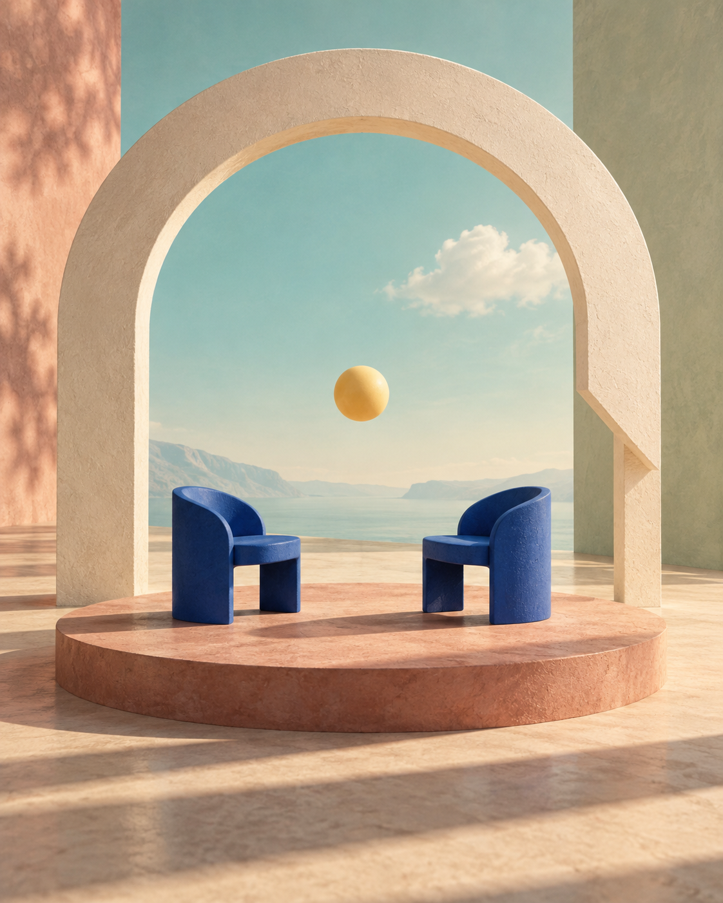

Keep hold of the thread.
See concise context develop as the conversation moves from one subject to another.
Stay in the conversation. Explore keeps the thread, surfaces thoughtful follow-ups, and helps you make sense of what you hear.

An interview has room for unexpected turns. Your notes and questions should be able to follow.
See concise context develop as the conversation moves from one subject to another.
Consider specific follow-ups grounded in the customer’s words. You choose what to ask, and when.
Return to saved transcripts, structured notes and workflow diagrams after the conversation ends.
The pause. The workaround. The detail that changes your next question. Explore is designed to help you stay curious while the record takes shape.
Walk through an interview ↗Don’t rush
to the answer.
Follow the story.
Write the brief, name the people and bring your assumptions into the open.
Follow evolving threads and consider questions supported by the discussion.
Read the report, revisit its evidence and decide what deserves another conversation.
Explore a sample interview, its context and the report it leaves behind.
Explore the product concept